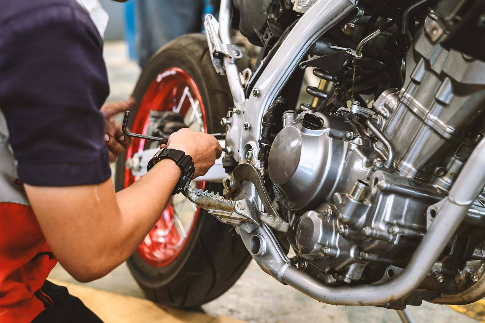

Faire une vidange
Filtre à huileLe filtre à huile retient les particules de saleté, les métaux et les contaminants présents dans l'huile moteur. En le changeant régulièrement, vous gardez l'huile propre et assurez le bon fonctionnement du moteur. Cela peut prévenir une usure excessive et prolonger la durée de vie du moteur. |
Choisir la bonne huile moteurIl existe plusieurs types d'huile moteur, chacune adaptée à des conditions spécifiques. Les huiles synthétiques offrent une meilleure protection et des performances supérieures, surtout dans des conditions extrêmes. Consultez le manuel de votre moto pour connaître le type d'huile recommandé. |
|
Pourquoi il faut faire une vidangeEn vidant régulièrement l'huile usée et en la remplaçant par de l'huile propre, vous éliminez les contaminants et les particules abrasives qui peuvent endommager les composants internes du moteur. Cela aide à maintenir les performances optimales du moteur et à prolonger sa durée de vie. |
 |